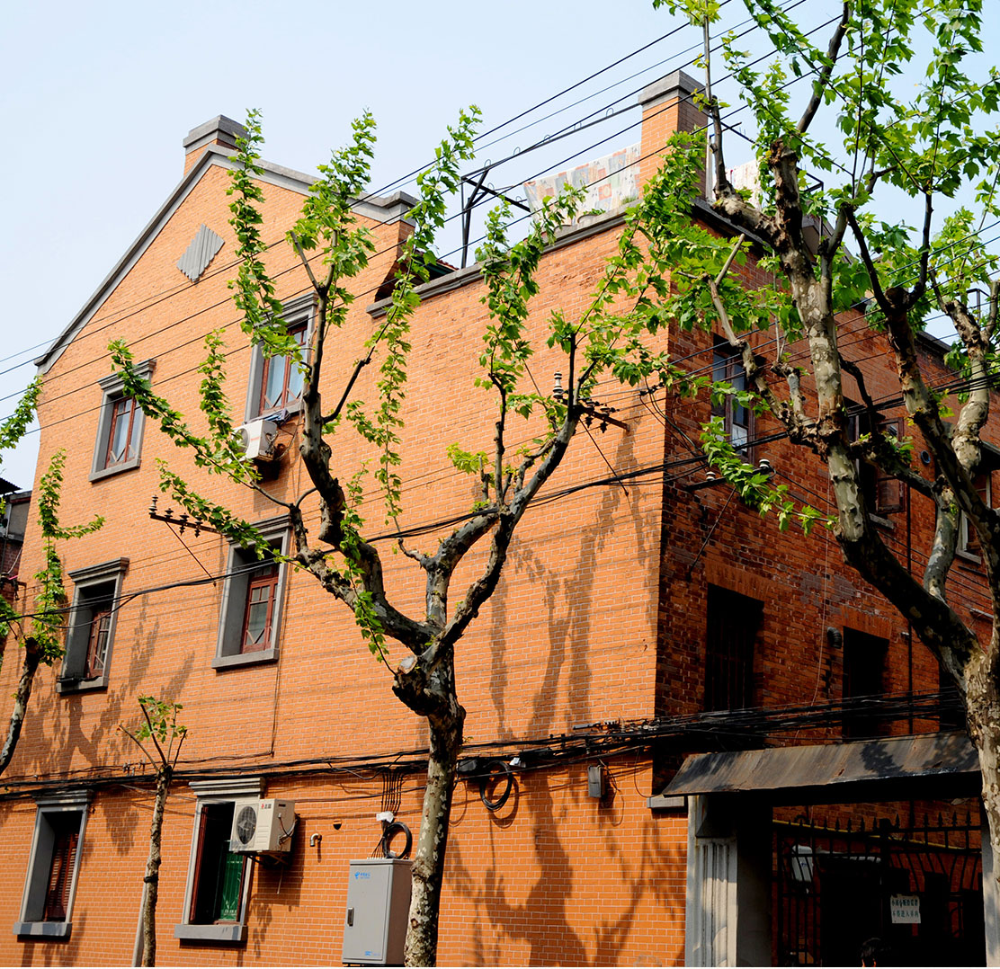

历史文化风貌区
上海山阴路
SHANGHAI JEWISH REFUGEES MUSEUM
山阴路是中国上海市虹口区的一条街道，南北走向，南起四川北路，北至祥德路，长651米。山阴路原名施高塔路，为上海公共租界工部局1911年越界筑路。1943年汪精卫政府接收租界时更名为山阴路。
-

大陆新村
CONTINETAL TERRACE
大陆新村介于新式石库门住房与新式里弄房屋之间
-
东照里
IN THE EAST LI
东照里12号曾是瞿秋白的故居
-
恒丰里
HENG FENG LI
恒丰里建于1925年，共有93幢房子
上海山阴路历史文化风貌区简介
Shanghai Shanyin Road Historical protected areas
- 
上海市山阴路历史风貌保护区1
上海市山阴路历史风貌保护区2
上海市山阴路历史风貌保护区3
山阴路是中国上海市虹口区的一条街道，南北走向，南起四川路，北至祥德路，长651米。山阴路原名施高塔路（Scott Road），为上海公共租界工部局1911年越界筑路。山阴路的今世前身。一百年前，今天的山阴路所在地是宝山县的乡间农田。1903年，虹口公共租界越界筑路，将四川路延伸至今鲁迅公园处，沿路两侧陆续繁衍出许多支路，山阴（即绍兴鲁迅先生的故乡）路就是在这样的情况下诞生的，它原名施高塔路。长度仅500米左右的山阴路如同一棵树的主干，它的“枝枝桠桠”里藏着许多独特的风景。到山阴路上走一走，正应了那句“山 阴 道 上，应 接 不 暇 ”。

大陆新村
continental terrace
大陆新村，是介于新式石库门住房与新式里弄房屋之间的一种房型。坐北朝南，一共有62号，每弄平均有10埭房屋，弄堂宽约4米。住宅围墙高度与二层窗台齐。推开一楼的铁门，是一条宽约1米的水泥通道，通道的西侧有一块约4平方米的泥地，可以种植一些花草树木。
东照里
简介
Introduction
大陆新村的对面是山阴路133弄，过去的东照里，又称日照里。这里的12号曾是瞿秋白的故居，但是与十步之遥的大陆新村鲁迅故居形成鲜明对比的是，瞿秋白故居既破败又少人知晓。尽管这里在1984年5月就被定为市级文物保护单位，但不知道是因为里面依然住着居民，还是瞿秋白头上的那片历史功过的乌云尚未散去，门口那块仅一尺见方的金属铭牌，实在简陋得令人惊讶。
QIAN AI LI 甜爱路
最初系日商东亚兴业株式会社的产业，建于二十世纪二十年代初
花园里
恒丰里
HENG FENG LI
景点概述
SCENIC SPOT OVERVIEW
从四川北路进入山阴路，右手边的前半部分是一大片由四达里、恒丰里和恒盛里三条弄堂组成的建筑群。这三条里弄的建筑式样大抵相仿，基本都是清水红砖的三层楼房，总共包括三百多幢房子；弄堂之间的小巷似纵横阡陌，四通八达，外来人走进去仿佛到了迷宫，所以居住在附近几十年的我，除了四达里外，一直搞不清恒丰里和恒盛里的具体区分。恒盛里的门牌号现在是属于宝安路160弄，而且四达里和恒丰里的大部分属于石库门，恒盛里则属于新式里弄，有矮墙围住的小花园，门楣和窗框的石头装饰很漂亮，后门有圆狐形门廊，三楼朝南有半圆形铸铁阳台。
在上海，统称为石库门的建筑其实也有等级之分，象恒丰里和四达里就属于石库门类别里的佼佼者。不仅外立面美观，山墙山花讲究，内部设施也比较完备，有当时颇为先进的抽水马桶。